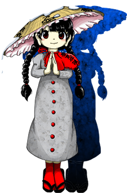

- Welcome to Touhou Wiki!
- Please register to edit. For assistance, check in with our Discord server or IRC channel.
Narumi Yatadera

|
Attention: This article is a stub and it needs expanding with more information related to the article's topic. If you can add to it in any way, please do so. |
Narumi Yatadera Naruko Yatadera | |
|---|---|
|
 Narumi Yatadera in Hidden Star in Four Seasons The Magical Jizo who Manifested in the ForestMore Character Titles | |
| Species |
Magician (animated Jizo statue) |
| Abilities |
Capable of using magic (control of life) |
| Location | |
Music Themes | |
| |
Appearances | |
| Official Games | |
| |
| Print Works | |
| |
Narumi Yatadera (矢田寺 成美 Yatadera Narumi) is a Jizo statue that came to life as a magician youkai due to the Forest of Magic's energy.
General Information[edit]
Abilities[edit]
- Capable of using magic (control of life)
According to Narumi, since fairies are pure life force, her ability can allow her to nullify them.
Background Information[edit]
Origin[edit]
Narumi's snow-covered, hatted appearance is based on the popular folk tale of the hatted Jizo statue, wherein a poor man heads out to sell cloth on New Year's Eve, but notices a man selling five straw hats out-of-season. Taking pity on him, the poor man exchanges the cloth for the hats. On the way home, the man notices six Jizo statues sitting out in the cold. He decides to cover each one with one of the hats, and to the sixth, gives his own. He goes home empty-handed, but is visited by the six Jizo the next evening who reward him for his generosity.
Name[edit]
Her full name is Narumi Yatadera (矢田寺 成美). The kanji of 'Narumi' means 'to become/attain/grow into', referencing her magical transformation from a statue, and 'beauty', respectively. Her first name could therefore mean something along the lines of 'attaining beauty'. Yatadera is a buddhist temple in Yamatokoriyama, Nara Prefecture, which is known for its jizou statues and in particular for housing the oldest jizou statue in Japan.[1]
Design[edit]
Narumi has black hair in two long braids, dark brown eyes, and long earlobes typical of Jizo statues. She wears a long gray dress with a stone texture, with red circular buttons on the front, and a red capelet covering her left shoulder. She wears black sandals with red socks, and has a frilly, snow-covered conical straw hat.
The capelet and hat are both items Jizo statues are typically adorned with to convey gratitude or to ward off evil. The capelet has the phrase "hikkyō jōbutsu" (畢竟成佛, meaning 'ultimate attainment of Buddhahood') written on it. The text on her hat is taken from a poem, and while partially obscured by the snow, it reads 「迷故三界城 悟故十方空 本來無東西 何處有南北 」, which roughly translates to 'Bewilderment [is akin to being lost] in the City of Three Realms. Enlightenment [is as if there] is emptiness in ten directions. Originally there was no East or West, so where do South and North exist?'.
The hat, including the poem text, is part of a traditional uniform for pilgrims undergoing the Shikoku Pilgrimage, a 1000 km route of 88 temples associated with the Buddhist monk Kōbō-Daishi. It was a dangerous journey, and pilgrims embarked on it aware of the possibility they may die. The poem on the hat was traditionally written on the coffins of priests, so by writing them on the hat, it could serve as their casket if they were to die.
Story[edit]
Games[edit]
- Hidden Star in Four Seasons
Relationships[edit]
Minor Relationships[edit]
Narumi and Marisa knew each other before the events of Hidden Star in Four Seasons, and are on friendly terms. According to ZUN, Marisa's quote about Alice putting hats on statues before her fight against Reimu in Imperishable Night was a hint to this (although ZUN might not have been serious).
Spell Cards[edit]
| Name | Translated | Comments | Games | Stage | ||
|---|---|---|---|---|---|---|
| Total: 10 | ||||||
| 魔符「インスタントボーディ」 | Magic Sign "Instant Bodhi" | HSiFS | St. 4: E/N | |||
| 魔符「即席菩提」 | Magic Sign "Instant Bodhi" | HSiFS | St. 4: H/L | |||
| 魔符「バレットゴーレム」 | Magic Sign "Bullet Golem" | HSiFS | St. 4: E/N | |||
| 魔符「ペットの巨大弾生命体」 | Magic Sign "Gigantic Pet Bullet Lifeform" | HSiFS | St. 4: H/L | |||
| 地蔵「クリミナルサルヴェイション」 | Jizo "Criminal Salvation" | HSiFS | St. 4: E/N | |||
| 地蔵「業火救済」 | Jizo "Hellfire Salvation" | HSiFS | St. 4: H/L | |||
| 魔符「慈悲の地蔵」 | Magic Sign "Merciful Jizo" | VD | Wednesday - 2 | |||
| 地蔵「菩薩ストンプ」 | Jizo "Bodhisattva Stomp" | VD | Wednesday - 3 | |||
| 地蔵「活きの良いバレットゴーレム」 | Jizo "Lively Bullet Golem" | VD | Wednesday - 4 | |||
| 夢地蔵「劫火の希望」 | Dream Jizo "Kalpagni's Hope" | VD | Wrong Sunday - 5 | |||
Additional Information[edit]
- In Hidden Star in Four Seasons, she is also referred to as Naruko (成子), such as during Marisa's scenario as well as in the upper-left corner of the screen when fought as a boss. According to ZUN, Naruko was her original name and made it into the game originally (hence why it's still in some areas) but he later changed it to Narumi, partly because too many characters had names ending with 'ko'.
Fandom[edit]
Official Profiles[edit]
References[edit]
- ↑ Yatadera Temple website
| This page is part of Project Characters, a Touhou Wiki project that aims to write proper descriptions for all official characters of Touhou Project. Please keep the character page guidelines in mind when contributing. |